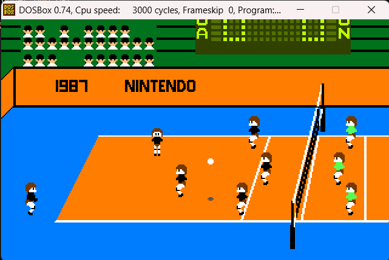
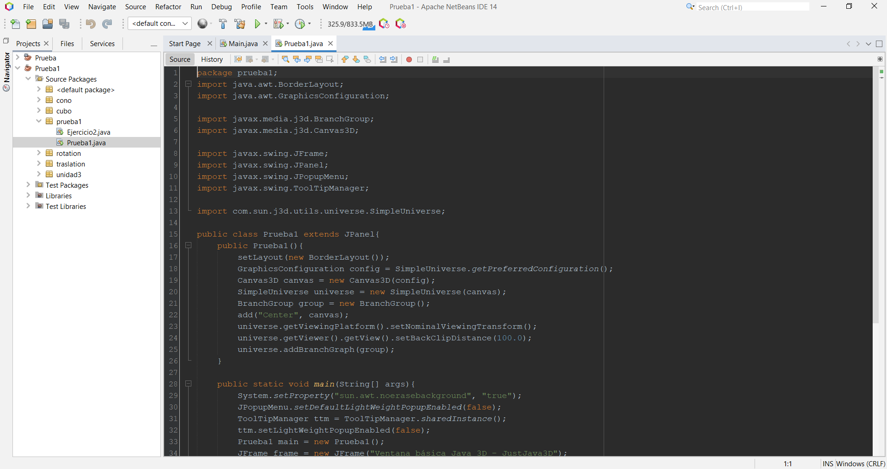
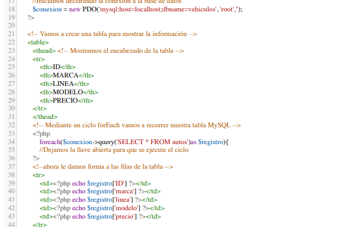
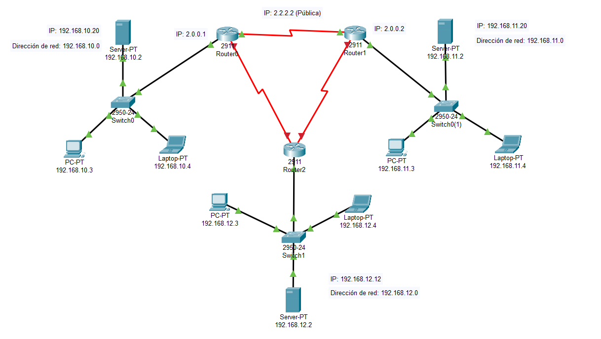

Video introducción
Datos personales
- Nombre completo: Tania Apale Mora
- Fecha de nacimiento: 03/Octubre/2005
- Lugar de nacimiento: Rio Blanco
Formación académica
- 2023-Actual: Instituto Tecnológico de Orizaba
- 2020-2023: CBTIS 142
- 2017-2020: Escuela Secundaria Técnica Industrial Número 84
Experiencia laboral
Pese a no poseer experiencia en el campo laboral, a continuación se presenta una galería de imagenes
de proyectos en el área de sistemas.



